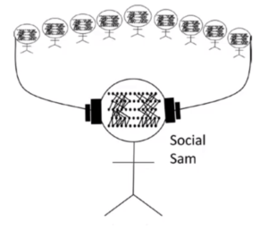

{#19} The trophy did not fit the suitcase because it was too small
«The thing that the gravitational wave physicists were most scared of was announcing that they had seen a gravitational wave, and it turning out to be wrong. But the sciencists of artificial intelligence don’t seem to be too worried about that. They seem very happy all the time to say: “Yes, we finally created artificial intelligence”.»
Harry Collins, Public talk at ENABLE
Hello fellow humans,
long time no see… our RAM was in the cloud, but we had a backup memory of you in some old hard drive we stumbled upon while tiding up home!
Our project of scientific discussion is still alive and kicking, although in recent times we have been locked inside our own language bubble (most of us are Italian). If you forgot who we are, you can check it out here. Soon enough we hope to be back to more adventures abroad. In the meantime we refresh our English with a new special number of our newsletter.
So: is it the trophy or the suitcase that is too small? Hopefully you know the answer, because you know of trophies and suitcases, but would an algorithm know? What if we wrote: “The trophy did not fit the suitcase because it was too tall”? [^1]
[^1]: We tried this into Italian here and here. Interestingly, just a couple of years ago Google Translate would not be able to get this correctly. Now, sometimes it does, sometimes not. You can have fun trying with other examples, such as this.
We talked about trophies and suitcases, machine learning and context, scientific research and social dilemmas with sociologist of (or “in”) science and expert of expertize Harry Collins at the workshop Exploring life dynamics: In and out of equilibrium organized by the ENABLE initiative.
But first, as usual we provide a random collection of seemingly unrelated readings.
Artificial hugs!
eXtemporanea
Digest
- Piekniewski’s blog, Ai mid 2021. Self driving car meets reality. On Tesla delusional claims about the capabilities of self-driving cars and some more grounded facts.
- Scott Aaronson, QC ethics and hype: the call is coming from inside the house. More about rampant overselling of ideas: inside the quantum computing community, some (important) people are finally starting to hear the voice of conscience.
- The persona of Camille Noûs is quickly rising to be a scientific superstar: an extremely young but prolific author, with an impressive span of knowledge from theoretical physics to cognitive biology! More about s/he here: https://www.cogitamus.fr/
- Leah Aronowsky, Gas Guzzling Gaia, or: A Prehistory of Climate Change Denialism. «Gaia’s key assumption—that the climate is a fundamentally stable system, able to withstand perturbations—emerged as a result of a collaboration between the theory’s progenitor, James Lovelock, and Royal Dutch Shell in response to Shell’s concerns about the effects of its products on the climate».
- Geoffrey Supran, Naomi Oreskes, Rhetoric and frame analysis of ExxonMobil’s climate change communications. «A dominant public narrative about climate change is that “we are all to blame.” Another is that society must inevitably rely on fossil fuels for the foreseeable future. How did these become conventional wisdom? We show that one source of these arguments is fossil fuel industry propaganda».

Meeting Harry Collins at ENABLE
We organized a public conversation with sociologist of science and expert of expertize Harry Collins. (click on Social Sam above or here , meeting starts at around 10:10). One of us made some introductory explanation of what Machine Learning is from a physicist’s perspective.
We already met Harry at Festivaletteratura some years ago, where he discussed about gravitational waves, a field of expertize that he followed all along his professional life.
Tonight we invited Harry to discuss Machine Learning / Artificial Intelligence, another enterprize that involves scientists and technicians of all kinds. Unfortunately we were just starting to get warmed up when it all came to an end! But since we had a few more questions for Harry, the discussion followed privately. Here some more notes.
1) I would like to ask you some considerations about the political implications of your work on expertise and artificial intelligence.
My book Artificial Experts, and still more my more recent book Artifictional Intelligence, stress that humans are essentially social creatures, and that is why AI conceived as modelling a brain does not work, but also why deep learning (because it can take from the surrounding environment) is much better than previous approaches. This, as I argue elsewhere, precipitates a model of democracy in which individual humans too are not free-floating choice-makers but, on the contrary, are potentially feral animals until formed by their social environment. That means that the rhetoric of populists who take experts as obstacles to the working out of the “will of the people” is nonsense: we are all experts or nothing. At the most general level we are experts in our native language and ways of being in our native society; at less general levels as we go down the “social fractal” we are experts in other things like the law and science. Democratic elections are a matter of choices made by many different kinds of experts and the checks and balances we value in democratic societies depend on us accepting the particular expertise of certain groups (e.g. judges). The success of deep learning shows the social nature of humans as does the failures of deep learning; these successes and failures are what my book is about.
2) One possibility is that deep-learning ultimately “works” because it forces its own models upon society.
I think there is a lot of this in all kinds of artificial intelligence. It is summed up in a catchphrase from a popular British comedy show: “computer says no”. What this means is that we are encouraged and often forced to accept the failings of artificial intelligence as our own fault. We ought actively to resist this kind of pressure.
My recent paper The science of artificial intelligence and its critics critically describes the kind of science that AI is. I think that AI has been a positive force for understanding humans even if its practitioners mostly don’t understand humans. There are examples in the article but a still more recent example is machine translation, which reveals the biasses in Western societies even as it echoes them. The trouble is that unlike, say, physics, AI is too busy selling its product to put the necessary effort into working out whether they are really delivering the promised goods. To know whether AI is truly mimicking (or improving on) human behaviour is a difficult task and one that would best be done by the AI experts. But they would need to develop a new code of practice that makes it source of great shame every time a promise is not fulfilled and they would need to develop a new willingness to explore what ‘fulfilling the promise’ really means.
3) Regarding populists taking experts as obstacles: I don’t think this is because they do not trust expertise, but because they believe experts are stuck into given mindsets and institutions (which they associate to corporate power).
That is a viewpoint but certainly not the one that drives Trump and the British populists. Their approach is far less subtle and far more self-interested. See Experts and The Will Of The People.
I am more thinking of the people who vote, not the candidates… So let me reformulate: is there a growing distrust towards (some) institutions, where does it come from, and which institutions do better?
Yes, there is a growing distrust toward some institutions but it has many and complex sources. One of the most worrying sources is the spread of social media and the like. It is easy for contributors to social media to disguise themselves as trustworthy ‘friends’ while because of the nature of the medium they might come from anywhere and be controlled by anyone for all kinds of hidden interests. The only solution I can think of is more civic education explaining the role of scientific expertise in society and where it is located and how to access it with some degree of confidence. But the whole tendency of current societies is very worrying. It is time for academics to concentrate less on fashionable critiques of science (even though there is corruption among some bodies of scientists) and try to answer the much harder question of why scientific expertise is a vital resource in democracy.
4) In Gravity’s Ghost you give a detailed account of how physicists use statistics. Althought there is no ultimate warranty, the practice of separating hypothesis from observation confers credibility to discovery. It seems that with ML/AI the line between these two phases is blurred. One reason is that there is little theory to compare to (unlike gravitational waves). Furthermore the pressure to publish may bolster known statistical mispractices like the file-drawer problem, leading to truth inflation (too many true negatives remain unpublished, pushing up the number of false positives). Isn’t there a risk that ML scientific facts may actually be self-fulfilling prophecies?
I would not locate the problem of AI in its statistical practices but rather in the willingness of its experts to set a high enough bar on what counts as an announcable success. Physicists live in terrible fear of publishing some new discovery claim that turns out to be wrong; AI scientists don’t even trouble to work out what ‘wrong’ might mean. The result is that we all suffer from the ‘computer says no’ problem.
Thanks, and best wishes by